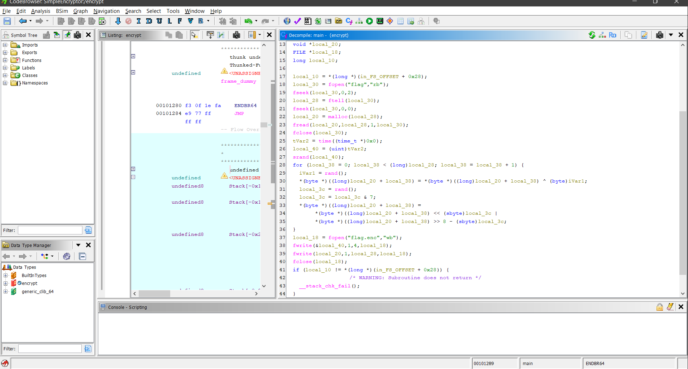
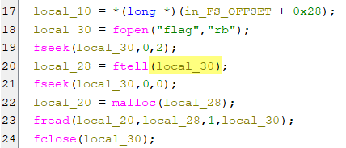
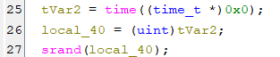
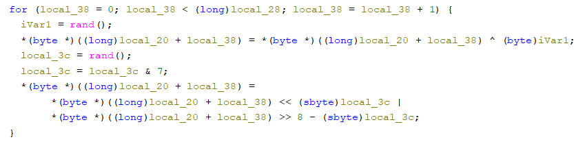
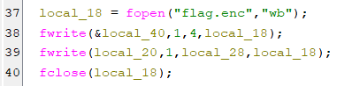
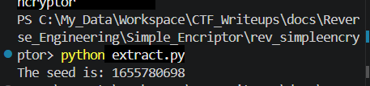
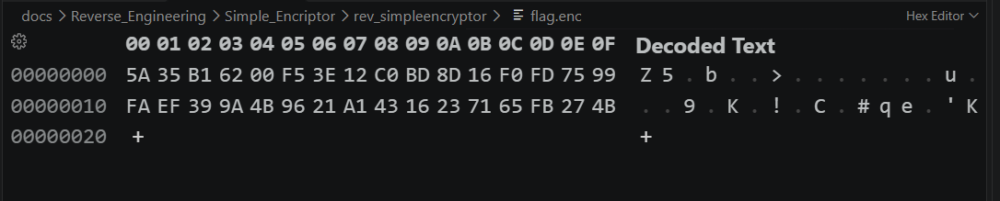
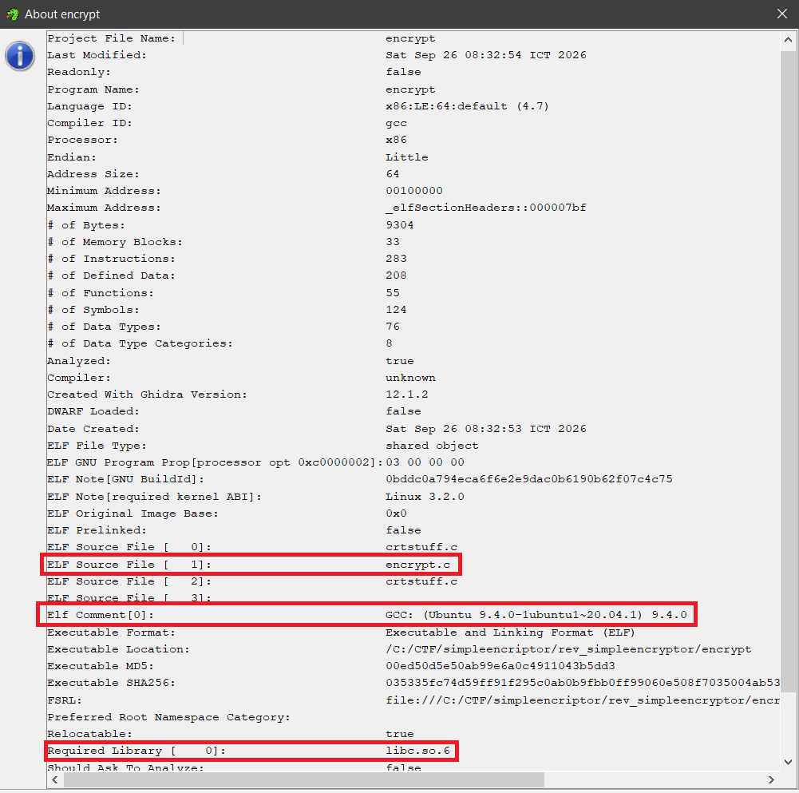
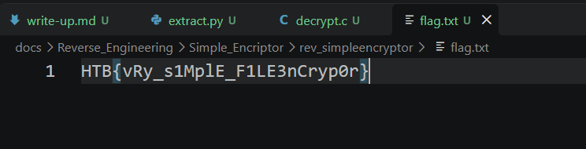

Write up
Link to the challenge: Simple Encryptor

first, i put the encrypt file inside Ghidra. after that, Ghidra decompiles the binary file back into a c/c++ language code.
after that lets focus on explaining lines of code

local_30 = fopen("flag","rb");
fseek(local_30,0,2);
local_28 = ftell(local_30);
fseek(local_30,0,0);
local_20 = malloc(local_28);
fread(local_20,local_28,1,local_30);
fclose(local_30);
this part can be understood as opening a file stream, allocating memory for the file content, reading the content into memory, and then closing the file stream.

tVar2 = time((time_t *)0x0);
local_40 = (uint)tVar2;
srand(local_40);
time((time_t *)0x0) means time(NULL) which returns the current time in seconds since the epoch January 1, 1970.
This value is then used to seed the random number generator with srand local_40.
How srand(), rand(), and time() work will be explained in Fundamentals/re_101.md.

for (local_38 = 0; local_38 < (long)local_28; local_38 = local_38 + 1) {
iVar1 = rand();
*(byte *)((long)local_20 + local_38) = *(byte *)((long)local_20 + local_38) ^ (byte)iVar1;
local_3c = rand();
local_3c = local_3c & 7;
*(byte *)((long)local_20 + local_38) =
*(byte *)((long)local_20 + local_38) << (sbyte)local_3c |
*(byte *)((long)local_20 + local_38) >> 8 - (sbyte)local_3c;
}
main part of the encryption algorithm is a for loop that iterates through each byte of the file content stored in local_20.
I can rewrite the code in a more readable way:
for (int i = 0; i < file_size; i++) {
int random_value = rand();
file_content[i] ^= (byte)random_value; // XOR operation with a random value
int shift_amount = rand() & 7;
file_content[i] = (file_content[i] << shift_amount) | (file_content[i] >> (8 - shift_amount)); // Bitwise rotation
}
So basically the encryption algorithm goes like this:
-
XOR each byte with random_value.
-
Bitwise rotate the result by shift_amount.
We can reverse the encryption process like this:
-
Bitwise rotate the encrypted byte by (8 - shift_amount).
-
XOR the result with the same random_value.

local_18 = fopen("flag.enc","wb");
fwrite(&local_40,1,4,local_18);
fwrite(local_20,1,local_28,local_18);
fclose(local_18);
after we know how the encryption algorithm works & how to reverse it, we just need to know what is the random value (seed) that was used to encrypt the file.
luckily, the program saves the seed value local_40 into the first 4 bytes of the encrypted file flag.enc.
now the only thing left to do is to read the first 4 bytes of the encrypted flag.enc file, and use that value to seed the random number generator again, and then we can decrypt the file by reversing the encryption process.
i can extract 4 bytes from the encrypted flag.enc file by writing a simple script in python:
import struct
with open('flag.enc', 'rb') as f:
# Read 4 bytes, unpack as Little-Endian (<) Unsigned Integer (I)
seed = struct.unpack('<I', f.read(4))[0]
print(f"The seed is: {seed}")
The result of the script:

So the seed is 1655780698. I can check if this is correct by reading flag.enc file using a hex editor.

we can see that the first 4 bytes of the flag.enc file is 5A 35 B1 62.
however, the value is stored in Little-Endian format, so we need to reverse the byte order to get the correct seed value.
-> The correct seed value is 62 B1 35 5A in hex, which is 0x62B1355A = 1655780698 in decimal.
After we have the seed value, we can use it to seed the random number generator again and then decrypt the file by reversing the encryption process.
I wrote a simple C script to do this:
#include <stdio.h>
#include <stdlib.h>
#include <stdint.h>
int main() {
// Read the encrypted file
FILE *file = fopen("flag.enc", "rb");
fseek(file, 0, SEEK_END);
long file_size = ftell(file);
fseek(file, 0, SEEK_SET);
uint8_t *file_content = malloc(file_size);
fread(file_content, 1, file_size, file);
fclose(file);
srand(1655780698); // Seed the random number generator with the known seed
// Decrypt the file
// Notice that the first 4 bytes of the file (0 - 3) are the seed value and didn't get encrypted -> we start from 4.
for (int i = 4; i < file_size; i++) {
int random_value = rand(), shift_amount = rand() & 7;
file_content[i] = (file_content[i] >> shift_amount) | (file_content[i] << (8 - shift_amount)); // Reverse bitwise rotation
file_content[i] ^= (uint8_t)random_value; // XOR operation with the same random value
}
FILE *output_file = fopen("flag.txt", "wb");
fwrite(file_content + 4, 1, file_size - 4, output_file); // Print ONLY the decrypted content into flag.txt
fclose(output_file);
free(file_content);
return 0;
}
This part i bumped into a problem. Because encrypt is a Linux ELF binary, it uses the glibc implementation of rand().

I ran decrypt.c on Windows, but the rand() implementation on Windows uses ucrtbase.dll implementation, which is different from the one in glibc. So the decrypted content is not correct.
because of that I ran decrypt.c in WSL. We found the flag.

Flag:
HTB{vRy_s1MplE_F1LE3nCryp0r}